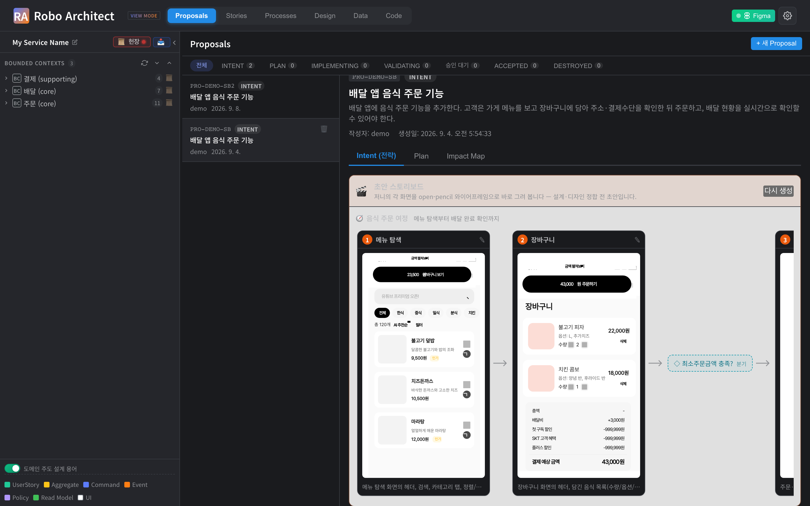
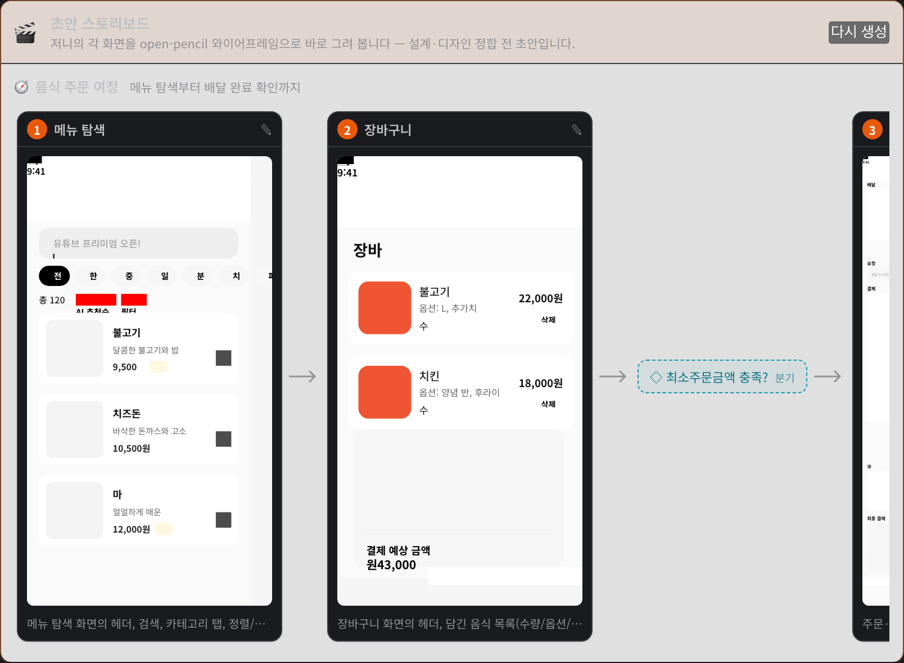
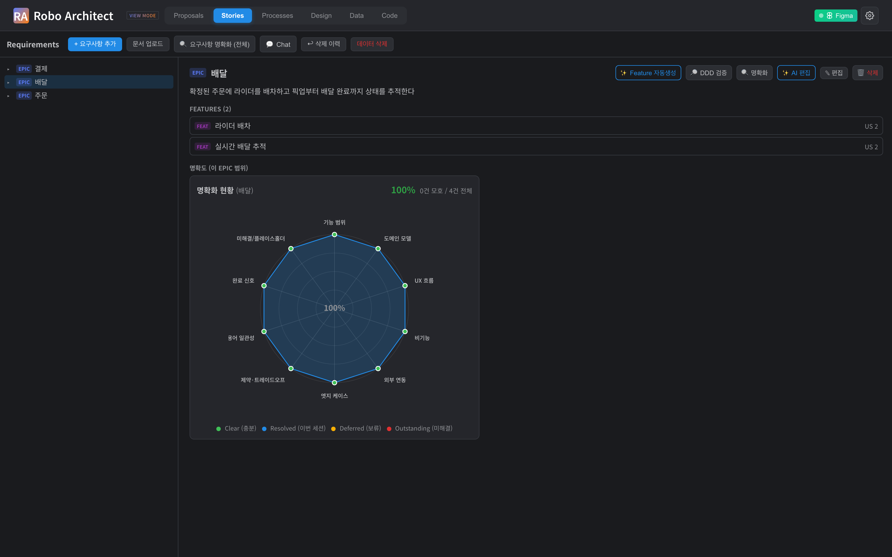
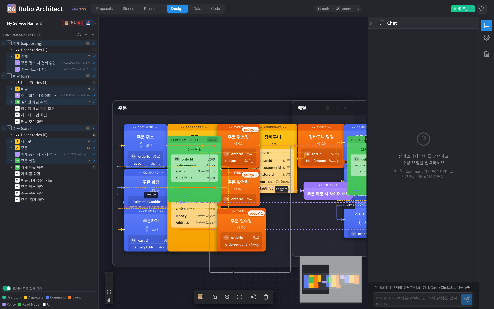
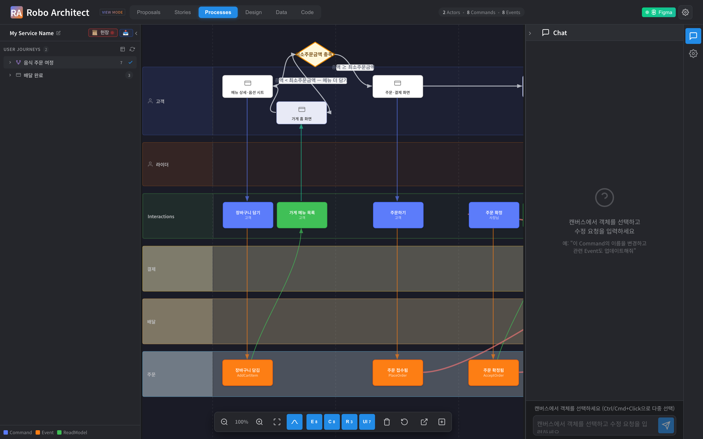
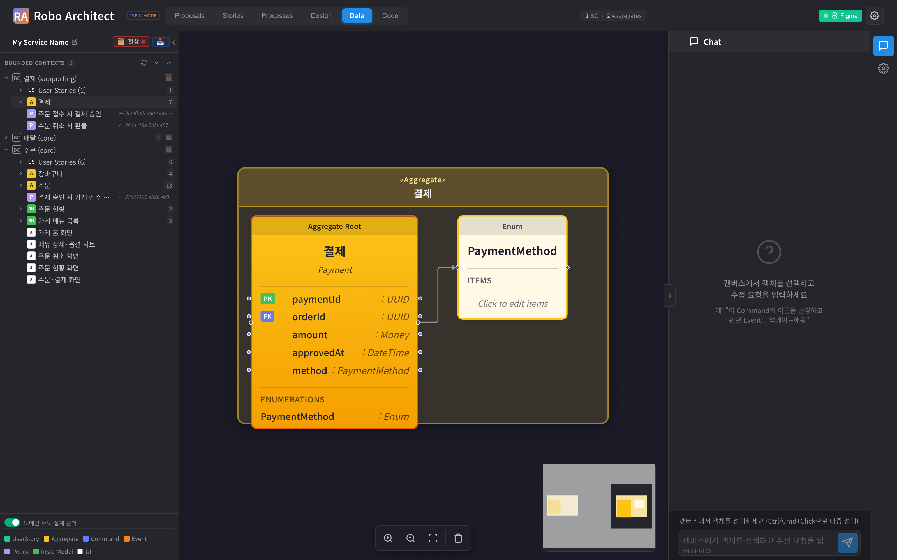
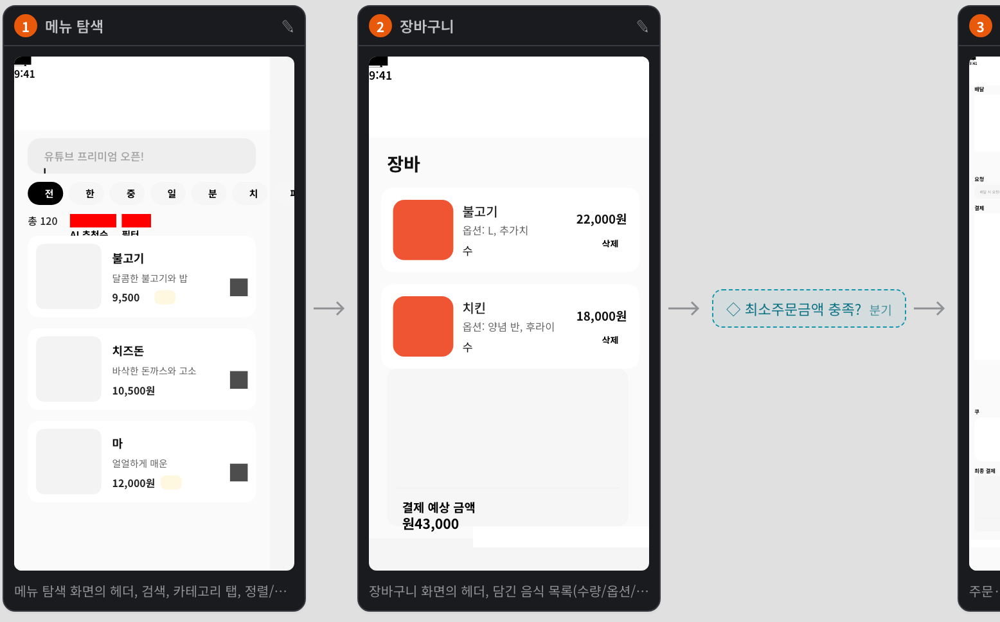
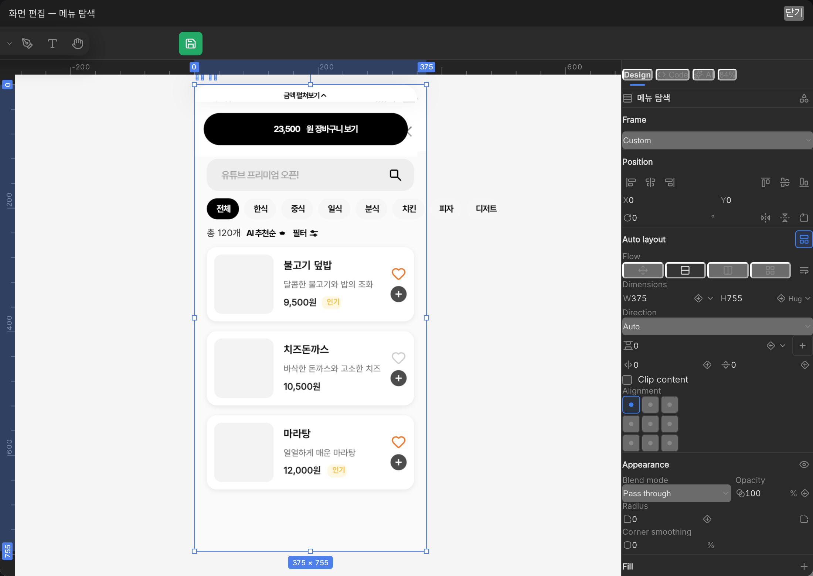
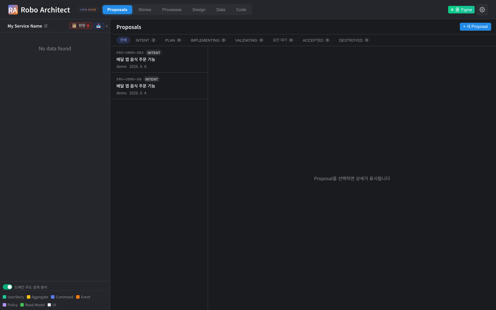

AI에게 전달할 맥락을 명세 · 시나리오 · 도메인 경계로 구조화하고, 변경에 따른 영향 범위를 분석하며, 화면과 코드까지 하나의 흐름으로 연결하는 AI 아키텍처 워크벤치입니다.

3–15쪽
배경 · 정의 · 산출물 · 특장점
16–17쪽
시스템 구성 · 기술 스택
18–19쪽
실행 중인 제품 화면 · 6단계
20–24쪽
보안 · 납품 · 실적 · 일정
AI가 코드를 대신 작성하면서 구현 비용은 빠르게 낮아졌습니다. 그런데 구조 없이 AI를 도입한 팀은 오히려 느려졌습니다. 문제는 모델의 성능이 아니라, AI에게 전달할 맥락이 정리돼 있지 않다는 데 있습니다.
출처: 2025년 METR 무작위 대조 실험(RCT) — 숙련 개발자가 구조 없이 AI 도구를 사용한 경우
모델은 일반적인 코드 패턴은 알지만, 우리 조직의 업무 규칙과 용어는 모릅니다. 담당자가 대화할 때마다 맥락을 다시 설명해야 하고, 설명이 빠진 부분은 AI가 추측으로 메웁니다.
코드는 빠르게 나오지만, 그 코드가 의도와 맞는지 확인하고 고치는 데 더 많은 시간이 듭니다. 결과를 판단할 기준이 없으면 검토는 감에 의존하게 됩니다.
시니어 개발자는 도메인 지식으로 기획서의 빈틈을 메웠습니다. 조직의 기억이 없는 AI는 그 빈틈을 창의적으로 추측해 채웁니다. 모호함은 그대로 재작업 비용이 됩니다.
결정의 근거가 채팅 기록에만 남으면 다음 작업에서 다시 사라집니다. 담당자가 바뀌면 조직은 같은 분석을 처음부터 반복합니다.
AI에게 맥락을 제대로 주려면 세 가지가 함께 필요합니다. 무엇을 만들지 명세로 고정하고(SDD), 합격 기준을 구체적인 값으로 적고(BDD), 맥락의 경계를 도메인으로 나눕니다(DDD).
대화 로그가 아니라 명세 문서로 소통합니다. 기획(What & Why) → 계획(How) → 작업(실행) 순서로 진행해 AI가 중간에 목표를 잃지 않게 합니다.
"안전하게 인출한다"가 아니라 "잔액 100, 20 인출 요청, 잔액 80"처럼 씁니다. 구체적인 값은 AI가 가장 정확하게 이해하는 형식입니다.
컨텍스트를 폴더 크기가 아니라 도메인 경계로 자릅니다. 그래야 AI에게 줄 맥락과 담당 조직, 용어, 배포 단위가 한 선에 정렬됩니다.
| 작성 방식 | 예시 — ATM 현금 인출 | AI가 이해하는 정도 |
|---|---|---|
| 유저스토리 | "고객이 잔액을 안전하게 인출할 수 있어야 한다" | 잔액과 금액의 정의가 없어, 예외 상황을 AI가 임의로 상상합니다 |
| 요구사항 명세서 | "시스템은 인증된 사용자에게 안전한 인출 기능을 제공한다" | 업무 부서는 읽을 수 있지만 구체적인 값이 없습니다 |
| 상세 설계서 | if balance >= amount: balance -= amount |
정밀하지만 기획자와 고객이 검토할 수 없습니다 |
| BDD 시나리오 | Given 잔액 100 · When 20 인출 요청 · Then 20 지불, 잔액 80 | 기획자도 읽고 AI도 실행합니다 — 번역 과정이 없습니다 |
명세 주도 개발은 개인과 한 팀의 문제를 풀었습니다. 저장소 하나에서는 충분하지만, 수십 개 팀과 수백 개 저장소로 넘어가면 명세를 파일로 두는 방식이 네 곳에서 깨집니다.
| 깨지는 지점 | 왜 생기는가 | 조직이 치르는 비용 |
|---|---|---|
| 명세의 고립 | 명세 파일이 각 저장소 안에만 존재합니다 | 부서 간 중복 개발, 같은 기능의 서로 다른 두 구현 |
| 용어의 분열 | 저장소마다 도메인 용어를 각자 정의합니다 | 「수용가」와 「고객」이 같은 개념인지 시스템이 알지 못합니다 |
| 변경 영향 불가시 | 요구 · 설계 · 코드의 연결이 문서 링크 수준입니다 | 규정 1건 개정에 영향 범위를 사람이 전수조사합니다 |
| 조직 기억의 소멸 | 맥락이 담당자의 머리와 대화 로그에 남습니다 | 핵심 인력이 떠나면 도메인 지식이 사라지고 재분석을 반복합니다 |
| 비교 축 | 파일 기반 명세 | 그래프 기반 명세 |
|---|---|---|
| 명세의 위치 | 저장소 안의 마크다운 파일 | 전사 도메인 그래프 — 조직의 자산 |
| 경계의 기준 | 저장소 · 폴더 — 우연히 정해진 경계 | Bounded Context — 도메인과 담당 조직의 경계 |
| 용어 일관성 | 저장소마다 각자 기술 | 하나의 용어 체계를 그래프가 유지 |
| 변경 영향 분석 | 검색하고 회의로 확인 | 중복 · 충돌 · 설계 영향을 자동 산출 |
| 지식의 수명 | 프로젝트 종료와 함께 흩어짐 | 조직 기억으로 축적 |
요구사항 분석부터 설계, 화면 구성, 코드 구현까지의 과정을 하나의 도메인 그래프로 연결하는 AI 아키텍처 워크벤치입니다. 요구사항 문서를 업로드하면 이벤트스토밍 기반의 설계 그래프를 생성합니다. 변경을 제안하면 영향 범위와 구현 계획을 제시하고, 승인된 변경 사항을 코드와 설계 그래프에 함께 반영합니다.
기획 문서(PDF · 텍스트), Confluence 페이지, Figma 화면을 올리거나, 구현할 기능을 글로 직접 입력합니다.
요구사항을 Bounded Context · Aggregate · Command · Event · Policy · 화면 등 DDD 설계 요소와 그 관계로 구조화해 그래프 데이터베이스에 저장합니다.
영향 분석, 구현 계획, 와이어프레임, 그리고 실제 소스 변경까지 이어집니다.
| 기존 설계 도구 · 문서 | Robo Architect | |
|---|---|---|
| 설계의 형태 | 다이어그램 이미지와 문서 | 질의 가능한 그래프(노드 22종 · 관계 32종) |
| 변경 영향 | 사람이 전수조사 | 그래프 탐색으로 영향 노드 산출 |
| 화면 | 별도 도구에서 따로 관리 | 같은 그래프의 UI 노드 — 초안 단계부터 생성 |
| 코드 | 설계와 단절 | 구현 파일과 설계 요소의 연결 관계를 기록 |
| 방법론 | 교육 자료 | 단계별 절차로 제품에 내장(DDD 6단계 · ODA 표준) |
| AI의 역할 | 코드 자동완성 | 구체화 · 계획 · 구현 · 검증을 사용자 승인 아래 수행 |
요구사항 문서를 업로드하면 21단계 처리 과정을 거쳐 요구사항에서 도메인 개념과 관계를 추출하고 그래프에 저장합니다. 진행 상황은 단계별로 표시되며, 중간에 멈춰 검토한 뒤 이어서 진행할 수 있습니다.
| 계층 | 노드 |
|---|---|
| 요구사항 | Requirement · UserStory · Feature · Given/When/Then(인수조건) |
| 전략 설계 | BoundedContext · Policy |
| 전술 설계 | Aggregate · Command · Event · ReadModel · Property · Invariant |
| 화면 · 흐름 | UI · Journey · JourneyStep · FigmaBinding · StoryboardPageMapping |
| 구현 | ImplementationFile — 설계 요소가 어느 소스 파일로 구현됐는지 |
설계만 산출되는 것이 아닙니다. 같은 그래프에서 화면을 생성하고, 그 설계를 근거로 코드를 작성하며, 생성된 소스 파일과 설계 요소의 연결 관계를 그래프에 기록합니다.

와이어프레임은 이미지가 아니라 요소 트리입니다. 그래서 그 자리에서 편집기를 열어 고치고, Figma로 내보내 디자이너가 이어받을 수 있습니다. 사내 디자인 시스템의 컴포넌트를 그대로 배치합니다.
구현은 대상 프로젝트의 격리된 작업 공간(git worktree)에서 진행되며, 원본 브랜치는 승인 시점에만 병합합니다. 구현 도중 작업을 중단하고 수정 지시를 전달한 뒤 다시 진행할 수 있습니다.
| 산출물 | 내용 |
|---|---|
| PRD · 기능명세 | Bounded Context 단위로 요구사항·설계·인수조건을 묶어 생성 |
| 이벤트 모델 | UI → 명령 → 이벤트 → 읽기모델 스윔레인, GWT 시나리오 포함 |
| BPMN 프로세스 | 업무 흐름을 표준 BPMN으로 내보내기 |
| 화면 · 스토리보드 | 와이어프레임, Figma 프레임, .fig 파일 |
| 사용자 매뉴얼 | 실제 화면을 캡처해 DOCX 매뉴얼로 자동 생성 |
같은 그래프를 역할에 맞는 네 개의 창으로 봅니다. 아래는 모두 실행 중인 제품에서 캡처한 화면입니다.




대부분의 설계 도구는 그림을 그립니다. Robo Architect는 관계를 저장합니다. 화면에 보이는 다이어그램은 그 관계를 그려 낸 결과이며, 설계 정보의 기준은 언제나 그래프입니다.
Epic → Feature → UserStory → 인수조건. 모호한 요구사항은 AI가 질문을 만들어 되묻고, 답을 요구사항에 반영합니다.
Bounded Context 경계, Aggregate, 명령 · 이벤트 · 정책을 한 화면에서 봅니다. 노드를 선택해 속성과 불변식을 확인하고 수정할 수 있습니다.
Aggregate의 속성 · 불변식 · 읽기 모델을 상세히 검토해 구현 단위를 확정합니다.
사용자 흐름과 화면을 확인하고, Figma 문서와 양방향으로 동기화합니다.
create/update/delete 같은 CRUD 어휘 대신 명령과 이벤트의 도메인 이름을 사용합니다.
용어가 일관되지 않으면 그래프의 연결도 어긋나기 때문입니다.
요구사항 하나를 수정하면, 그 변경이 연결된 설계 요소에 어디까지 영향을 주는지 분석해 보여줍니다. 담당자의 기억에 의존하는 대신 그래프의 관계를 따라 영향 범위를 계산합니다.
| 항목 | 내용 |
|---|---|
| 영향 요소 목록 | 변경의 영향을 받는 설계 요소를 계층별로 제시하고, 확신도(높음 · 중간 · 낮음)와 판단 근거를 함께 표시합니다 |
| 충돌 가능성 | 동일한 설계 요소에 영향을 주는 다른 변경 요청이 있으면 함께 표시합니다 |
| 회귀 테스트 범위 | 영향 경로에 포함된 인수조건(GWT)을 모아 재검증 대상으로 제시합니다 |
예시 — "주문 취소 시 환불 규칙을 바꾼다"는 요청
| 계층 | 영향받는 설계 요소 |
|---|---|
| 요구사항 | 주문 취소 · 환불 확인 관련 UserStory와 인수조건 |
| 전술 설계 | 주문 취소 명령, 주문 취소됨 이벤트, 환불 정책, 결제 불변식 |
| 화면 | 주문 취소 화면, 주문 현황 화면 |
| 구현 | 해당 설계 요소에 연결된 소스 파일 |
변경 요청마다 고유 번호를 부여하고, 영향을 받는 설계 요소와 연결해 기록합니다. 요청은 초안 → 제출 → 승인 → 구현 완료 순서로 진행됩니다. 요청자는 본인이 제출한 변경을 직접 승인할 수 없습니다. 변경 이력을 통해 설계가 언제, 어떤 이유로 수정되었는지 확인할 수 있습니다.
추가하거나 변경할 기능을 글로 입력하면 AI가 요구사항을 세분화하고 구현 계획을 제시합니다. 사용자는 단계별 결과를 검토하고, 승인한 계획에 따라 구현과 검증을 진행합니다. 최종 승인 후에는 구현 코드를 병합하고 설계 그래프에도 변경 사항을 반영합니다.
| 단계 | 하는 일 |
|---|---|
| Intent | 입력한 글을 Epic · Feature · UserStory · 사용자 흐름으로 구체화합니다. 내용이 모호하면 최대 5개의 선택형 질문으로 확인합니다 |
| Plan | 확정된 요구사항과 프로젝트 설계 원칙(기술 스택 · 모놀리스/마이크로서비스 · 저장소 구성 전략)을 근거로 Aggregate · 명령 · 이벤트와 배포 · 연동 계획을 산출합니다 |
| Implement | 대상 프로젝트에 전용 브랜치의 격리된 작업 공간을 만들고, Code 탭에서 Claude Code가 구현을 수행합니다. 중지 · 수정 지시 · 재시도가 가능합니다 |
| Test | 인수조건(GWT)을 기준으로 결과를 검증하고 구조 검사를 함께 수행합니다 |
| Accept | 코드 병합과 설계 그래프 반영을 함께 수행합니다. 한쪽이 실패하면 양쪽을 되돌립니다 |
DDD를 실무에 적용할 수 있도록 단계별 절차와 검토 질문을 제품에 내장했습니다. 제안을 만들 때 분해 모드를 선택하면 해당 모드의 절차가 그대로 진행됩니다.
요구사항 구체화와 계획 두 단계로 진행합니다. 영향 범위가 작고 신속한 처리가 필요한 변경에 적합합니다.
ddd-starter 방법론의 6단계를 그대로 밟습니다. 새 도메인이나 큰 구조 변경에 적합합니다.
TM Forum ODA / SID / Open API 표준에 근거해 분해하고 적합성을 점검합니다. 통신 도메인용입니다.
단계마다 설계 결정에 필요한 질문을 제시합니다. "이 서브도메인이 사업의 핵심 경쟁력을 담당하는가?", "서비스 간 연동에 이벤트 방식을 사용할 것인가, 동기 호출을 사용할 것인가?", "이 Aggregate가 지켜야 할 불변식은 무엇인가?" 같은 질문에 선택형으로 답하고, 필요하면 이전 단계로 돌아가 다시 생성합니다. 먼저 변경 범위를 분석해 필요한 단계를 제안하므로, 작은 변경에 6단계를 모두 적용하지 않습니다.
설계 검토에서 가장 어려운 순간은 "이게 실제로 어떤 화면이 되는지"를 상상해야 할 때입니다. Robo Architect는 요구사항을 기능과 사용자 흐름으로 구체화하는 단계가 끝나는 즉시 각 화면을 와이어프레임으로 그려 보여줍니다.

이전에는 설계와 디자인이 모두 끝난 뒤에야 화면을 확인할 수 있었습니다. 이제 제안 초안 단계에서 바로 확인합니다.
카드의 편집 아이콘을 누르면 디자인 편집기가 열립니다. 요소를 옮기거나 크기를 바꾼 뒤 저장하면 해당 단계의 화면에 수정 사항이 반영됩니다.

사용자는 AI가 제안한 변경이 언제, 어디에 반영되는지 미리 확인할 수 있어야 합니다. Robo Architect는 모든 변경을 제안 → 확인 → 적용 세 단계로 나눕니다.
| 작업 | 대상 브랜치 · 설계 그래프에 최종 반영 | 설명 |
|---|---|---|
| 영향 분석 · 미리보기 · 스토리보드 | 없음 | 모두 읽기 전용입니다 |
| 제안 내부의 초안 편집 | 없음 | 제안에만 저장되며 운영 모델은 그대로입니다 |
| 격리 환경에서의 구현 | 없음 | 격리된 작업 공간의 파일만 바뀌며, 대상 브랜치는 그대로입니다 |
| 계획(Plan) 확정 | 없음 | 구현 계획만 확정합니다 |
| 최종 승인(Accept) | 있음 | 코드 병합과 그래프 반영이 함께 일어납니다 |
수 초 이상 걸리는 모든 작업은 진행 상황을 실시간으로 전달합니다 — 문서 수집·분석 21단계, 제안 분해, 구현 로그, 화면 렌더링까지. AI가 현재 수행 중인 작업과 그 이유를 한국어로 기록하므로, 결과의 근거를 확인하기 어려운 상황이 생기지 않도록 설계했습니다.
데스크톱 애플리케이션 하나에 웹 UI · API 서버 · 그래프 데이터베이스 · 렌더 엔진이 함께 들어 있습니다. LLM 요청의 전송 대상은 설정에서 지정하며, 사내 게이트웨이로 연결할 수 있습니다.
상용 API 또는 사내 게이트웨이
플러그인으로 화면 양방향
요구사항 문서 수집
대상 저장소 병합
특수하거나 폐쇄적인 기술을 쓰지 않았습니다. 고객사 개발팀이 이어받아 유지보수할 수 있는 표준 스택으로 구성돼 있습니다.
| 레이어 | 구성 |
|---|---|
| 프런트엔드 | Vue 3.5 · Vite · Pinia · Vue Flow(그래프 캔버스) · bpmn-js · Mermaid · Tailwind CSS · CodeMirror 6 · xterm.js |
| 백엔드 | Python 3.11+ · FastAPI · Uvicorn · Pydantic v2 · SSE(서버 전송 이벤트) |
| 그래프 | Neo4j 5 · Cypher · APOC. 스키마(제약·인덱스)는 파일로 형상관리 |
| AI 오케스트레이션 | LangChain · LangGraph · Deep Agents — 공급자 무관 인터페이스 |
| LLM 공급자 | Anthropic · OpenAI · Google · OpenRouter · OpenAI 호환 사내 게이트웨이 |
| 디자인 렌더 | open-pencil 엔진 · CanvasKit(Skia) · Yoga 레이아웃 · Figma .fig 입출력 |
| 코딩 에이전트 | Claude Code(PTY 세션) · MCP 서버 · git worktree 샌드박스 |
| 데스크톱 | Electron 31 · electron-builder(dmg · nsis · AppImage) · 자동 업데이트 |
| 컨테이너 | Podman(rootless · 데몬리스) 또는 Docker · Compose 호환 |
| 검증 | pytest · Playwright · ruff — 정적 분석 · 단위 · E2E |
LLM 공급자와 모델은 환경 설정으로 바꿉니다. 특정 공급자에 종속되지 않도록 연동을 구성했습니다.
백엔드 api/features/<이름>과 프런트엔드 features/<이름>이 1:1로 대응하며,
기능 간 직접 참조를 금지합니다.
방법론과 절차는 스킬 파일로 관리합니다. 절차를 바꾸는 데 제품 재배포가 필요 없습니다.
.fig 구조를 따릅니다.
아래 화면은 모두 실행 중인 제품에서 캡처한 것입니다. 설명을 위한 목업이 아닙니다.
기획 문서를 업로드하거나 Confluence 페이지를 연결하면, 21단계 처리 과정을 거쳐 유저스토리 · 컨텍스트 · Aggregate · 명령 · 이벤트 · 화면을 추출해 그래프에 적재합니다. 진행 상황이 단계별로 표시되며, 중간에 멈춰 검토한 뒤 이어갈 수 있습니다. 기존 시스템이 이미 있다면 이 단계를 건너뛰고 완성된 설계를 가져올 수도 있습니다.
Proposals 탭에서 새 제안을 만들고, 바꾸고 싶은 것을 자연어로 적습니다. 이때 분해 모드(간편 · DDD 상세 · ODA 표준)를 고릅니다.

AI가 입력한 요구사항을 Epic · Feature · UserStory · 사용자 흐름으로 구체화합니다. 내용이 모호하면 선택형 질문으로 확인합니다. 검토 결과 수정이 필요하면 의견을 적어 다시 생성하거나 직접 수정할 수 있습니다.
요구사항 구체화가 끝나면 스토리보드가 자동으로 생성됩니다. 사용자 흐름의 화면들이 순서대로 그려지므로, 이해관계자는 텍스트가 아니라 화면을 보고 초안을 판단합니다.
확정된 요구사항과 프로젝트 설계 원칙을 근거로 전술 설계(Aggregate · 명령 · 이벤트)와 배포 · 연동 · 저장소 구성 계획이 나옵니다.
대상 프로젝트에 격리된 작업 공간이 만들어지고, Code 탭에서 Claude Code가 구현을 수행합니다. 진행 로그를 보며 중지하거나 방향을 바꿀 수 있습니다.
인수조건(GWT)을 기준으로 결과를 검증한 뒤 승인하면, 코드 병합과 그래프 반영이 함께 일어납니다. 갱신된 그래프는 최신 설계를 담고, 다음 변경의 기준이 됩니다.
인수조건 기준 판정과 구조 검사 결과를 함께 봅니다.
코드와 그래프를 한 흐름으로. 실패 시 양쪽 롤백.
누가 언제 무엇을 승인했는지 상태 이력으로 남습니다.
"AI가 설계를 바꾸고 코드를 쓴다"는 구조는 그 자체로 통제가 필요합니다. Robo Architect는 설치형을 전제로, 데이터가 나가지 않는 것과 변경이 통제되는 것 두 가지를 설계 기준으로 삼았습니다.
| 항목 | 내용 |
|---|---|
| 승인 게이트 | AI가 산출한 어떤 것도 사람의 명시적 확정 없이 그래프나 코드에 반영되지 않습니다 |
| 자기 승인 금지 | 변경을 제출한 사람이 그 변경을 승인할 수 없습니다 |
| 동시 편집 보호 | 버전 불일치 시 덮어쓰지 않고 충돌로 알립니다 |
| 코드 격리 | 구현은 전용 브랜치의 격리된 작업 공간에서만 수행하며, 원본 브랜치는 병합 전까지 변경되지 않습니다 |
| 되돌리기 | 승인 취소 시 설계 그래프의 반영을 되돌리며, 코드 되돌림 여부는 선택 |
| 감사 로그 | 요청별 상관관계 ID와 구조화 로그. 상태 전이 이력이 노드에 남습니다 |
구체화 · 계획 · 구현 · 검증 절차가 스킬 파일에 정의돼 있으므로, 조직의 설계 규칙(명명 규칙, 필수 산출물, 금지 패턴)을 스킬에 반영하면 모든 제안이 같은 기준을 거치도록 할 수 있습니다. 프로젝트 설계 원칙에는 기술 스택 · 아키텍처 스타일 · 저장소 구성 전략이 저장되어 모든 계획에 적용됩니다.
별도의 서버 구축 없이 인스톨러 하나로 시작할 수 있습니다. Python · Node · 데이터베이스를 따로 설치할 필요가 없습니다.
| 구분 | 절차 | 소요 |
|---|---|---|
| 데스크톱 | 인스톨러 실행 → 컨테이너 런타임 · 그래프 DB · 백엔드까지 자동 기동 | 수십 분 |
| 서버 설치 | Compose로 백엔드 · 그래프 DB · 렌더 서비스 기동 후 사내 도메인 연결 | 수십 분 |
| 폐쇄망 | 컨테이너 이미지를 파일로 반입 → 검증 → 로드 → 기동 | 반입 절차 별도 |
| 업그레이드 | 새 버전으로 교체 후 재기동. 그래프 스키마는 기동 시 자동 적용 | 분 단위 |
Windows(nsis) · macOS(dmg) · Linux(AppImage). 백엔드를 자식 프로세스로 띄우고 앱 종료 시 함께 정리합니다. 자동 업데이트를 지원합니다.
Podman을 사용해 데몬 없이, 관리자 권한 없이 구동합니다. 상용 라이선스가 필요한 데스크톱 컨테이너 제품에 의존하지 않습니다.
레거시·데이터 분석 팩은 설치 시 선택하거나 나중에 추가·제거할 수 있습니다.
그래프 데이터베이스를 별도로 설치하는 대신, 사내에서 운영 중인 데이터베이스에 연결할 수도 있습니다.
"AI가 만든 설계를 믿을 수 있는가"에 대한 답을 제품 개발 방식으로 제시합니다. Robo Architect 개발팀은 제품 개발에도 동일한 방법론을 적용합니다.
모든 기능은 명세(spec) → 계획(plan) → 태스크(tasks) → 구현 순서로 진행되며, 그 산출물이 저장소에 함께 남습니다. 현재 47개의 기능 명세가 축적돼 있고, 각각에 무엇을 왜 그렇게 결정했는지가 기록돼 있습니다.
| 원칙 | 내용 |
|---|---|
| I. 그래프가 기준 | 모든 설계 정보는 그래프에 저장하고 별도의 기준 데이터를 두지 않는다 (타협 불가) |
| II. 도메인 언어 | CRUD 어휘 금지, 이벤트스토밍 어휘 사용 |
| III. 스트리밍 우선 | 수 초 이상 걸리는 작업은 진행률 스트리밍 필수 |
| IV. 사람이 승인 | 계획과 적용을 분리. 자동 적용 금지 |
| V. 기능별 모듈 | 백엔드와 프런트엔드의 기능 모듈을 1:1로 대응, 기능 간 직접 참조 금지 |
| VI. 공급자 중립 | LLM 공급자·모델은 설정으로. 하드코딩 금지 |
| VII. 관측 가능 | 상관관계 ID + 구조화 로그를 기본으로 |
| VIII. 화면 생성 경로 | 화면은 반드시 렌더 엔진을 거친다 (타협 불가) |
| IX. 플러그인 규율 | Figma 플러그인과 백엔드 간 개발 루프 규칙 |
| X. 스킬 우선 | 절차와 방법론은 스킬 파일로 관리하고 제품 코드에 포함하지 않는다 |
Robo Architect는 이벤트스토밍 기반 설계 · 코드 생성 도구 MSAEZ(MSA Easy)의 경험을 바탕으로 개발한 차세대 제품입니다. 아래는 기반 제품 MSAEZ가 산업 현장과 공공 플랫폼, 교육 과정에서 쌓아 온 도입 실적입니다.
포스코DX에서 애플리케이션 및 마이크로서비스의 설계와 소스코드 생성 도구로 사용되고 있습니다. 대규모 제조 · 산업 IT 조직의 실제 개발 과정에서, 이벤트스토밍으로 도출한 설계 모델을 기반으로 마이크로서비스 코드를 생성하는 데 활용됐습니다.
DPG(디지털플랫폼정부) 통합테스트베드는 한국지능정보사회진흥원(NIA)이 운영하는, 민간·공공의 데이터와 클라우드 자원을 활용해 혁신 서비스를 개발·시험·검증할 수 있도록 지원하는 플랫폼입니다. 중소기업·스타트업·시민개발자·공공기관이 이용 대상이며, 인프라를 직접 구축하는 대신 민간이 개발한 서비스형 소프트웨어(SaaS)를 개발지원 도구로 제공합니다.
MSA Easy(MSAEZ)는 이 테스트베드에 등록되어 마이크로서비스의 분석 · 설계 · 구현 · 배포 전 과정을 자동화하는 SaaS로 제공되고 있습니다.
클라우드 네이티브 애플리케이션 개발 전문 교육기관 MSA School의 표준 실습 도구로 채택되어, 수강생이 이벤트스토밍으로 도메인을 설계하고 그 모델에서 코드를 생성해 배포하는 전 과정을 실습했습니다.
누적 실적은 교육 325회 · 수강생 9,655명 · 17,864시간이며, 커리큘럼은 기초 · 중급 · 고급 3단계로 Biz(이벤트스토밍 · DDD) · Dev(Spring Boot · Kafka) · Ops(Kubernetes · GitOps) 전 영역을 다룹니다.
PoC부터 본 도입까지 4단계로 진행합니다. 아래는 표준 일정이며, 고객사 환경과 검토 절차에 따라 조정됩니다.
외부 상용 API · 사내 게이트웨이 · 자체 호스팅 중 무엇을 쓸지.
격리된 작업 공간을 어느 저장소에 만들고 어느 브랜치로 병합할지.
기술 스택 · 아키텍처 스타일 · 저장소 구성 전략을 한 번 수립.
조직 고유 설계 절차 · 산출물 양식을 스킬로 반영.
도입 상담 · 데모 요청 · 견적 문의 — 무엇이든 남겨주세요. 담당 전문가가 영업일 기준 1일 이내에 답변드리며, 원하시면 실제 제품을 활용한 시연 일정도 안내해 드립니다.